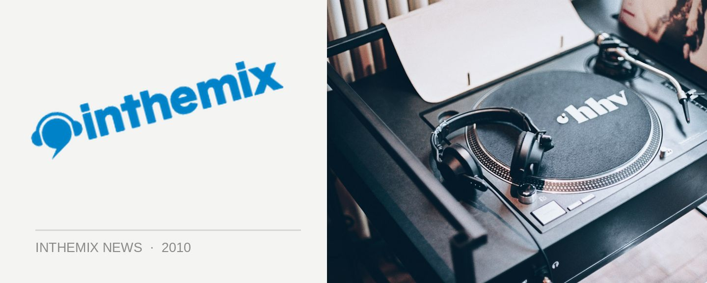

Pink teddies + more stuffed with $9m worth of drugs!
So as it turns out, that innocuous looking pink teddy that you bought your loved one for Valentines Day might end up yielding a whole lot more than just a Sunday night shag. The AFP has smashed a crime gangs who have allegedly using stuffed toys, Tonka trucks, and even nappies to import drugs, and so far there have been 20 arrests with more than 50kg of drugs seized to the value of more $9 million across 145 seizures since the beginning of the week. Start stockpiling those childrens toys!
The Australian Federal Police told the Herald Sun this week the seizures can be attributed to the force’s recent shift back towards policing, following an increased focus on counter terrorism since the September 11 attacks. “What this demonstrates is a line in the sand and a reinvigoration of the AFP’s ability to really go after the people who are hurting Australia,” said the AFP’s Kevin Zuccato this week.
The keystone achievement in last week’s seizures was the arrest of three men who faced Sydney’s Central Local Court on Wednesday, charged with the importation and possession of 60g of methamphetamines – concealed in a big pink teddy bear.
Pink teddy bears stuffed with methamphetamines, what’s next? Barbie doll boxes brimming over with cocaine? Ken dolls packed with piles of PCP? Mr Potato Head busted for ecstacy possession? Oh wait a minute, that has ALREADY HAPPENED!